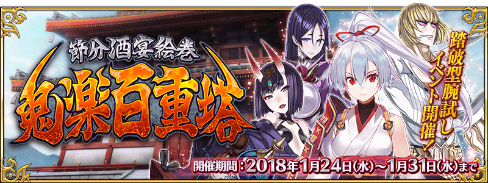
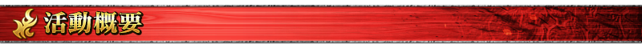
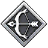
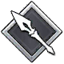
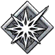
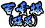

本頁面資訊僅供參考，實際情況請以遊戲內資料為準。
由於直接使用官方翻譯，可能會與其他站內翻譯相異，敬請見諒。
其他公告內容請參照日版當時公告翻譯。

僅列出關卡簡易資訊供參考之用
- 百重塔1~25階
-
關卡 推薦Lv. 消耗 職階傾向 初次獎勵 一階 楽勝な予感がする 40 1AP  3
3二階 コツコツと音が聞こえる 40 1AP 3三階 涼しそうな気配がする 40 1AP  5
5四階 蹄の音が聞こえる 40 1AP  3五階 馬のいななきが聞こえる 43 1AP  20六階 不気味な呪文が聞こえる 40 1AP  3
3七階 羽ばたく音が聞こえる 40 1AP 5八階 獣臭い匂いがする 40 1AP 3九階 すごく涼しそうな気配がする 43 1AP 10十階の鬼 60 1AP  十一階 ぬるぬるな予感がする 40 1AP 5十二階 獣臭い匂いがする 40 1AP 3十三階 蹄の音が聞こえる 40 1AP 5十四階 美しい歌声が聞こえる 40 1AP 3十五階 獣の咆哮が轟いている 43 1AP 1000000十六階 コツコツと音が聞こえる 40 1AP 3十七階 油の匂いがする 40 1AP 5十八階 蹄の音が聞こえる 40 1AP 3十九階 足音がドシンとお腹に響く 43 1AP 10二十階の鬼 60 1AP 
二十一階 死臭が漂っている 45 1AP 5二十二階 パラパラめくる音が聞こえる 45 1AP 3二十三階 磯の匂いがする 45 1AP 5二十四階 忠誠の誓いが聞こえる 45 1AP 3二十五階 魂を吸い取られそうな気配がする 48 1AP 30 - 百重塔26~50階
-
關卡 推薦Lv. 消耗 職階傾向 初次獎勵 二十六階 薬きょうの落ちる音が響いている 45 1AP 3二十七階 かん高い叫び声が聞こえる 45 1AP 5二十八階 涼しそうな気配がする 45 1AP 3二十九階 焼け焦げた匂いがする 48 1AP 10三十階の鬼 65 1AP 三十一階 つけもの石には困らなそう 45 1AP 三十二階 油の匂いがする 45 1AP 3三十三階 ぬるぬるな予感がする 45 1AP 5三十四階 美しい歌声が聞こえる 45 1AP 3三十五階 獣の咆哮が轟いている 48 1AP 2000000三十六階 歯車の回る音が聞こえる 45 1AP 3三十七階 かん高い叫び声が聞こえる 45 1AP 5三十八階 ブーンと羽音が聞こえる 45 1AP 3三十九階 底知れぬ魔力を感じる 48 1AP 10四十階の鬼 65 1AP 四十一階 夜の街の気配がする 50 1AP 5四十二階 ぐだぐだな予感がする 50 1AP 3四十三階 かん高い叫び声が聞こえる 50 1AP 5四十四階 歯車の回る音が聞こえる 50 1AP 3四十五階 美しい歌声が聞こえる 53 1AP 40四十六階 ぐだぐだな予感がする 50 1AP 3四十七階 羽ばたく音が聞こえる 50 1AP 5四十八階 見つめられている気がする 50 1AP 3四十九階 酷く強い呪いが立ち込めている 53 1AP 10五十階の鬼 70 1AP - 百重塔51~75階
-
關卡 推薦Lv. 消耗 職階傾向 初次獎勵 五十一階 つけもの石には困らなそう 50 1AP 5五十二階 無線連絡をする声が聞こえる 50 1AP 3五十三階 忍の者の気配がする 50 1AP 5五十四階 かん高い叫び声が聞こえる 50 1AP 3五十五階 羽ばたく音が聞こえる 53 1AP 3000000五十六階 コツコツと音が聞こえる 50 1AP 3五十七階 蹄の音が聞こえる 50 1AP 5五十八階 見つめられている気がする 50 1AP 3五十九階 難題の予感がする 53 1AP 10六十階の鬼 70 1AP 六十一階 かん高い叫び声が聞こえる 55 1AP 六十二階 にゅるにゅるな予感がする 55 1AP 3六十三階 忍の者の気配がする 55 1AP 5六十四階 コツコツと音が聞こえる 55 1AP 3六十五階 つけもの石には困らなそう 58 1AP 50六十六階 シャンシャンとベルの音がする 55 1AP 3六十七階 パラパラめくる音が聞こえる 55 1AP 5六十八階 Artsが効かない予感がする 55 1AP 3六十九階 焼け焦げた匂いがする 58 1AP 10七十階の鬼 75 1AP 七十一階 シャンシャンとベルの音がする 55 1AP 七十二階 ぐだぐだな予感がする 55 1AP 3七十三階 磯の匂いがする 55 1AP 七十四階 蹄の音が聞こえる 55 1AP 3七十五階 難題の予感がする 58 1AP 4000000 - 百重塔76~100階
-
關卡 推薦Lv. 消耗 職階傾向 初次獎勵 七十六階 ぐだぐだな予感がする 55 1AP 3七十七階 馬のいななきが聞こえる 55 1AP 七十八階 Quickが効かない予感がする 55 1AP 3七十九階 お酒の匂いがする 58 1AP 八十階の鬼 75 1AP 八十一階 シャンシャンとベルの音がする 60 1AP 八十二階 罠が仕掛けられている気がする 60 1AP 3八十三階 つけもの石には困らなそう 60 1AP 八十四階 魂を吸い取られそうな気配がする 60 1AP 3八十五階 獣の咆哮が轟いている 63 1AP 60八十六階 ぐだぐだな予感がする 60 1AP 3八十七階 蹄の音が聞こえる 60 1AP 八十八階 Busterが効かない予感がする 60 1AP 3八十九階 難題の予感がする 63 1AP 九十階の鬼 80 1AP 九十一階 ヒロインの気配がする 60 1AP 九十二階 羽ばたく音が聞こえる 60 1AP 3九十三階 酷く強い呪いが立ち込めている 60 1AP 九十四階 魂を吸い取られそうな気配がする 63 1AP 3九十五階 つけもの石には困らなそう 63 1AP 九十六階 底知れぬ魔力を感じる 63 1AP 5九十七階 Quickが効かない予感がする 63 1AP 九十八階 Busterが効かない予感がする 63 1AP 5九十九階 Artsが効かない予感がする 63 1AP 5000000百階の鬼 80 1AP

- 百重塔陽炎1~25階
-
關卡 推薦Lv. 消耗 職階傾向 初次獎勵 一階 楽勝な予感がする 60 1AP 二階 コツコツと音が聞こえる 60 1AP 20三階 涼しそうな気配がする 60 1AP 四階 蹄の音が聞こえる 60 1AP 五階 馬のいななきが聞こえる 63 1AP 5六階 不気味な呪文が聞こえる 60 1AP 七階 羽ばたく音が聞こえる 60 1AP 20八階 獣臭い匂いがする 60 1AP 九階 すごく涼しそうな気配がする 63 1AP 十階の登頂者 80 1AP 1000000十一階 ぬるぬるな予感がする 60 1AP 20十二階 獣臭い匂いがする 60 1AP 十三階 蹄の音が聞こえる 60 1AP 十四階 美しい歌声が聞こえる 60 1AP 十五階 獣の咆哮が轟いている 63 1AP 20十六階 コツコツと音が聞こえる 60 1AP 十七階 油の匂いがする 60 1AP 20十八階 蹄の音が聞こえる 60 1AP 十九階 足音がドシンとお腹に響く 63 1AP 二十階の登頂者 80 1AP 1000000二十一階 死臭が漂っている 65 1AP 二十二階 パラパラめくる音が聞こえる 65 1AP 30二十三階 磯の匂いがする 65 1AP 二十四階 忠誠の誓いが聞こえる 65 1AP 二十五階 魂を吸い取られそうな気配がする 68 1AP 30 - 百重塔陽炎26~50階
-
關卡 推薦Lv. 消耗 職階傾向 初次獎勵 二十六階 薬きょうの落ちる音が響いている 65 1AP 二十七階 かん高い叫び声が聞こえる 65 1AP 30二十八階 涼しそうな気配がする 65 1AP 二十九階 焼け焦げた匂いがする 68 1AP 三十階の登頂者 85 1AP 2000000三十一階 つけもの石には困らなそう 65 1AP 三十二階 油の匂いがする 65 1AP 三十三階 ぬるぬるな予感がする 65 1AP 30三十四階 美しい歌声が聞こえる 65 1AP 三十五階 獣の咆哮が轟いている 68 1AP 2三十六階 歯車の回る音が聞こえる 65 1AP 三十七階 かん高い叫び声が聞こえる 65 1AP 30三十八階 ブーンと羽音が聞こえる 65 1AP 三十九階 底知れぬ魔力を感じる 68 1AP 四十階の登頂者 85 1AP 2000000四十一階 夜の街の気配がする 70 1AP 四十二階 ぐだぐだな予感がする 70 1AP 四十三階 かん高い叫び声が聞こえる 70 1AP 40四十四階 歯車の回る音が聞こえる 70 1AP 四十五階 美しい歌声が聞こえる 73 1AP 40四十六階 ぐだぐだな予感がする 70 1AP 四十七階 羽ばたく音が聞こえる 70 1AP 四十八階 見つめられている気がする 70 1AP 40四十九階 酷く強い呪いが立ち込めている 73 1AP 五十階の登頂者 85 1AP 3000000 - 百重塔陽炎51~75階
-
關卡 推薦Lv. 消耗 職階傾向 初次獎勵 五十一階 つけもの石には困らなそう 70 1AP 40五十二階 無線連絡をする声が聞こえる 70 1AP 2五十三階 忍の者の気配がする 70 1AP 2五十四階 かん高い叫び声が聞こえる 70 1AP 2五十五階 羽ばたく音が聞こえる 73 1AP 40五十六階 コツコツと音が聞こえる 70 1AP 2五十七階 蹄の音が聞こえる 70 1AP 2五十八階 見つめられている気がする 70 1AP 40五十九階 難題の予感がする 73 1AP 六十階の登頂者 85 1AP 3000000六十一階 かん高い叫び声が聞こえる 75 1AP 50六十二階 にゅるにゅるな予感がする 75 1AP 2六十三階 忍の者の気配がする 75 1AP 2六十四階 コツコツと音が聞こえる 75 1AP 2六十五階 つけもの石には困らなそう 78 1AP 六十六階 シャンシャンとベルの音がする 75 1AP 2六十七階 パラパラめくる音が聞こえる 75 1AP 2六十八階 Artsが効かない予感がする 75 1AP 50六十九階 焼け焦げた匂いがする 78 1AP 七十階の登頂者 90 1AP 4000000七十一階 シャンシャンとベルの音がする 75 1AP 50七十二階 ぐだぐだな予感がする 75 1AP 七十三階 磯の匂いがする 75 1AP 七十四階 蹄の音が聞こえる 75 1AP 七十五階 難題の予感がする 78 1AP 50 - 百重塔陽炎76~100階
-
關卡 推薦Lv. 消耗 職階傾向 初次獎勵 七十六階 ぐだぐだな予感がする 75 1AP 七十七階 馬のいななきが聞こえる 75 1AP 50七十八階 Quickが効かない予感がする 75 1AP 七十九階 お酒の匂いがする 78 1AP 八十階の登頂者 90 1AP 4000000八十一階 シャンシャンとベルの音がする 80 1AP 八十二階 罠が仕掛けられている気がする 80 1AP 八十三階 つけもの石には困らなそう 80 1AP 八十四階 魂を吸い取られそうな気配がする 80 1AP 50八十五階 獣の咆哮が轟いている 83 1AP 八十六階 ぐだぐだな予感がする 80 1AP 八十七階 蹄の音が聞こえる 80 1AP 八十八階 Busterが効かない予感がする 80 1AP 50八十九階 難題の予感がする 83 1AP 九十階の登頂者 90 1AP 5000000九十一階 ヒロインの気配がする 80 1AP 100九十二階 羽ばたく音が聞こえる 80 1AP 九十三階 酷く強い呪いが立ち込めている 80 1AP 九十四階 魂を吸い取られそうな気配がする 83 1AP 九十五階 つけもの石には困らなそう 83 1AP 九十六階 底知れぬ魔力を感じる 83 1AP 九十七階 Quickが効かない予感がする 83 1AP 九十八階 Busterが効かない予感がする 83 1AP 九十九階 Artsが効かない予感がする 83 1AP 百階の陽炎 90 1AP 5000000